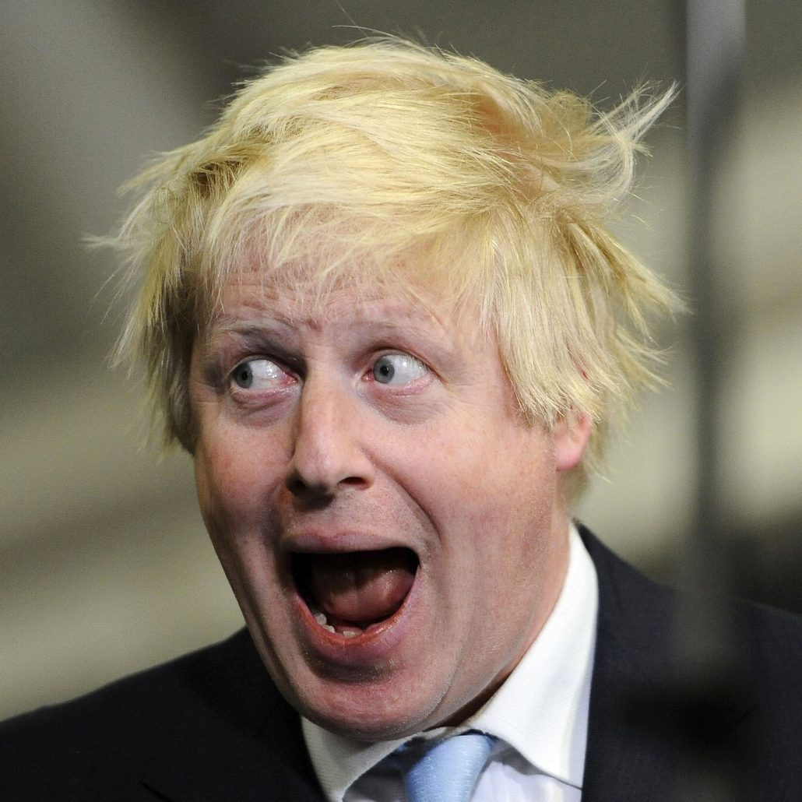

Le Royaume-Uni est aussi membre du Conseil de sécurité des Nations unies.
Le Royaume-Uni est, comme son nom l'indique, un royaume, mais le pouvoir du monarque britannique (actuellement la reine Élisabeth II) est limité : celui-ci règne mais ne gouverne pas. Le souverain possède par contre certains pouvoirs spécifiques qui encadrent cette capacité à régner comme celui de tenir une audience avec le Premier ministre. Ainsi on peut interpréter la capacité juridique du souverain britannique comme un droit d'être consulté, un droit d'encourager et un droit de mettre en garde.
Le pouvoir exécutif de cette monarchie parlementaire est exercé, au nom du monarque, par le Premier ministre (actuellement Boris Johnson), et les autres ministres du cabinet. Le Premier ministre est nommé par le souverain ; il n'est pas directement élu. Néanmoins lorsqu'un parti dispose d'une majorité absolue des sièges à la Chambre des communes, le monarque doit nommer au poste de Premier ministre le chef de ce parti. Et en cas de Parlement minoritaire, ce sont des ministres (senior ministers) qui conseillent le monarque pour choisir un Premier ministre ; ne peut être nommée qu'une personne qui disposera de la confiance d'une majorité des députés. Le cabinet est « le gouvernement de Sa Majesté ». Comme tout régime parlementaire, ses ministres sont responsables devant le Parlement, qui peut le renverser à tout moment. Le gouvernement peut également être renversé à l'issue d'élections législatives.
Bien qu'il y ait une Constitution du Royaume-Uni, le pays est l'un des rares ne possédant pas de constitution écrite codifiée35. Des conventions constitutionnelles et divers éléments issus de coutumes et de la common law (droit coutumier) mis en place depuis Guillaume le Conquérant (1066) ainsi que certaines lois en tiennent lieu, formant un ensemble que l'on désigne souvent sous la dénomination de loi constitutionnelle britannique.
Le gouvernement britannique est généralement constitué de dix-sept à vingt-trois ministres (actuellement vingt-deux) qui forment, autour du Premier ministre, le cabinet ministériel, à ne pas confondre avec le ministère, qui est la réunion d'une centaine de personnes : les ministres, les secrétaires d'État, les sous-secrétaires d'État et les secrétaires parlementaires privés. Par ailleurs, un phénomène s'accroît de plus en plus en Grande-Bretagne: la solidarité ministérielle. C'est-à-dire que si le Premier ministre engage la responsabilité ministérielle remise en cause par le Parlement, il n'est pas le seul à tomber, ses ministres tombent également.
Aussi, le gouvernement prend part à la procédure législative. En effet, la Chambre des communes est disposée de telle sorte que le gouvernement fait face, avec sa majorité, à l'opposition. Le gouvernement peut aussi proposer des textes qui seront débattus et votés par la chambre.
Il n'existe pas de loi de séparation entre l'Église et l'État au Royaume-Uni : le monarque est également le chef de l'Église anglicane. Selon l'acte d'Établissement de 1701 toujours en vigueur, les catholiques ne peuvent pas accéder au trône ; rien ne leur interdit toutefois de gouverner le Royaume-Uni en tant que Premier ministre.
Transparency International (TNI) place en 2018 le Royaume-Uni au 11e rang sur 180 pays pris en compte dans son classement selon d'indice de perception de corruption, signifiant un niveau de corruption très peu élevé.
Le Royaume-Uni est membre de l'OTAN, du Commonwealth (qui regroupe nombre de ses anciennes colonies) et du G8. Il est également membre permanent du Conseil de sécurité des Nations unies et dispose de la dissuasion nucléaire. En tant que successeur de l'Empire britannique, le Royaume-Uni exerce une influence certaine dans le monde, encore renforcée par l'usage extensif de sa langue et sa relation privilégiée avec les États-Unis.
Le 29 mars 2017, à la suite du référendum de juin 2016, le pays enclenche la clause de sortie du TUE (article 50) lançant la procédure de sortie de l'Union européenne dont il n'est plus membre depuis le 31 janvier 2020.
Depuis 2018, le Royaume-Uni dispense une formation militaire à certains des régimes les plus répressifs du monde, concernant les questions de droits de l'homme. La liste de 17 pays comprenait l'Arabie saoudite, l'Égypte, la Chine et l'Ouzbékistan.
Le Royaume-Uni a trois systèmes de loi distincts : le droit anglais (English law), qui s'applique à l'Angleterre et au pays de Galles, et le droit nord-irlandais (Northern Ireland law) sont basés sur les principes de common law. Le droit écossais (Scots law) est un système hybride basé sur les principes de droit civil. L'Acte d'Union de 1707 garantit le système des lois séparées pour l'Écosse.
La Chambre des lords était la plus haute cour pour les cas criminels et civils d'Angleterre, du pays de Galles et d'Irlande du Nord et pour les cas civils seulement en Écosse. Des récents changements de la constitution ont transféré en 2009 les pouvoirs de la Chambre des lords à la nouvelle Cour suprême du Royaume-Uni.
Élisabeth II, souveraine du Royaume-Uni.
Boris Johnson, Premier ministre.
Le Royaume-Uni est aussi membre du Conseil de sécurité des Nations unies.